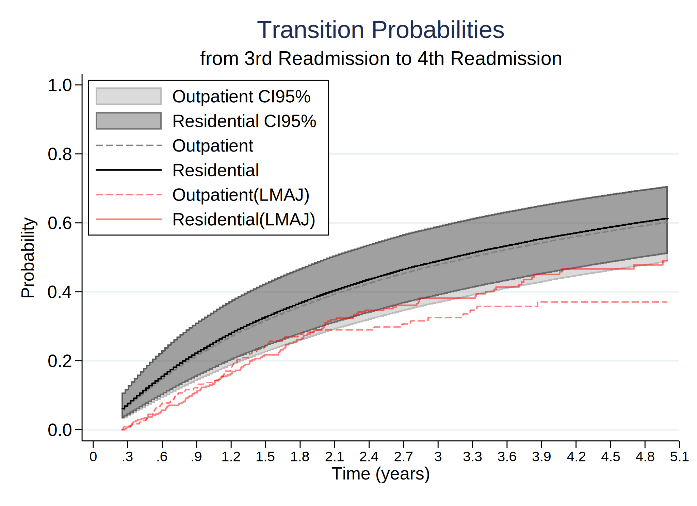
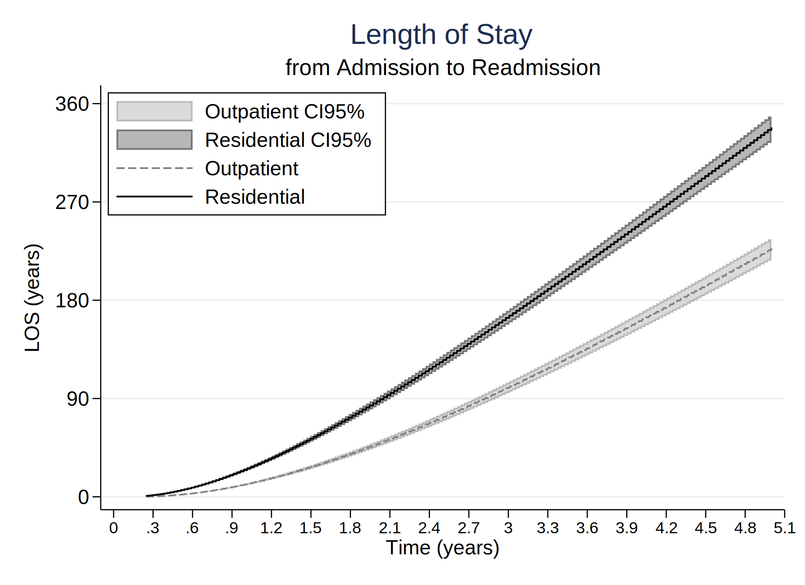

Date created: 16 Jul 2021.
Install commands that are unavailable or out of date.
. *<< dd_do : noout > >
. clear all
.
. cap noi which predictms
c:\ado\plus\p\predictms.ado
*! version 4.3.0 14mar2021 MJC
. if _rc==111 {
. cap noi net install multistate, from("https://www.mjcrowther.co.uk/code/multistate")
. }
. cap noi which merlin
c:\ado\plus\m\merlin.ado
*! version 2.0.2 19mar2021 MJC
. if _rc==111 {
. cap noi net install merlin, from("https://www.mjcrowther.co.uk/code/merlin/")
. }
. cap noi which sumat
c:\ado\plus\s\sumat.ado
*! Part of package matrixtools v. 0.28
*! Support: Niels Henrik Bruun, niels.henrik.bruun@gmail.com
*! 2021-01-03 toxl added
. if _rc==111 {
. cap noi scc install matrixtools
. }
. cap noi which estwrite
c:\ado\plus\e\estwrite.ado
*! version 1.2.4 04sep2009
*! version 1.0.1 15may2007 (renamed from -eststo- to -estwrite-; -append- added)
*! version 1.0.0 29apr2005 Ben Jann (ETH Zurich)
. if _rc==111 {
. cap noi ssc install estwrite
. }
. cap noi which winsor2
c:\ado\plus\w\winsor2.ado
*! Inspirit of -winsor-(NJ Cox) and -winsorizeJ-(J Caskey)
*! Lian Yujun, arlionn@163.com, 2013-12-25
*! 1.1 2014.12.16
. if _rc==111 {
. cap noi ssc install winsor2
. }
.
We need to obtain the file and the work folder.
. mata : st_numscalar("OK", direxists("/volumes/sdrive/data//"))
. if scalar(OK) == 1 {
. cap noi cd "/volumes/sdrive/data//"
. global pathdata "/volumes/sdrive/data//"
. di "Location= ${pathdata}; Date: `c(current_date)', considering an OS `c(os)' for the user: `c(username)'"
. }
. else display "This file does not exist"
This file does not exist
.
. mata : st_numscalar("OK", direxists("E:\Mi unidad\Alvacast\SISTRAT 2019 (github)\_mult_state_ags\"))
. if scalar(OK) == 1 {
. cap noi cd "E:\Mi unidad\Alvacast\SISTRAT 2019 (github)\_mult_state_ags"
E:\Mi unidad\Alvacast\SISTRAT 2019 (github)\_mult_state_ags
. global pathdata "E:\Mi unidad\Alvacast\SISTRAT 2019 (github)\_mult_state_ags"
. global pathdata2 "E:/Mi unidad/Alvacast/SISTRAT 2019 (github)/_mult_state_ags/"
. di "Location= ${pathdata}; Date: `c(current_date)', considering an OS `c(os)' for the user: `c(username)'"
Location= E:\Mi unidad\Alvacast\SISTRAT 2019 (github)\_mult_state_ags; Date: 16 Jul 2021, considering an OS Windows for the user: andre
. }
. else display "This file does not exist"
.
. mata : st_numscalar("OK", direxists("C:\Users\CISS Fondecyt\Mi unidad\Alvacast\SISTRAT 2019 (github)\_mult_state_ags\"))
. if scalar(OK) == 1 {
. cap noi cd "C:\Users\CISS Fondecyt\Mi unidad\Alvacast\SISTRAT 2019 (github)"
. global pathdata "C:\Users\CISS Fondecyt\Mi unidad\Alvacast\SISTRAT 2019 (github)\_mult_state_ags"
. global pathdata2 "C:/Users/CISS Fondecyt/Mi unidad/Alvacast/SISTRAT 2019 (github)/_mult_state_ags/"
. di "Location= ${pathdata}; Date: `c(current_date)', considering an OS `c(os)' for the user: `c(username)'"
. }
. else display "This file does not exist"
This file does not exist
.
. mata : st_numscalar("OK", direxists("C:\Users\andre\Desktop\_mult_state_ags\"))
. if scalar(OK) == 1 {
. cap noi cd "C:\Users\andre\Desktop\_mult_state_ags"
. global pathdata "C:\Users\andre\Desktop\_mult_state_ags"
. global pathdata2 "C:/Users/andre/Desktop/_mult_state_ags/"
. di "Location= ${pathdata}; Date: `c(current_date)', considering an OS `c(os)' for the user: `c(username)'"
. }
. else display "This file does not exist"
This file does not exist
.
. mata : st_numscalar("OK", direxists("C:\Users\CISS Fondecyt\OneDrive\Documentos\"))
. if scalar(OK) == 1 {
. cap noi cd "C:\Users\CISS Fondecyt\Mi unidad\Alvacast\SISTRAT 2019 (github)\_mult_state_ags"
. global pathdata "C:\Users\CISS Fondecyt\Mi unidad\Alvacast\SISTRAT 2019 (github)\_mult_state_ags"
. global pathdata2 "C:/Users/CISS Fondecyt/Mi unidad/Alvacast/SISTRAT 2019 (github)/_mult_state_ags/"
. di "Location= ${pathdata}; Date: `c(current_date)', considering an OS `c(os)' for the user: `c(username)'"
. }
. else display "This file does not exist"
This file does not exist
.
Path data= E:\Mi unidad\Alvacast\SISTRAT 2019 (github)_mult_state_ags;
Timestamp: 16 Jul 2021, considering that is a Windows OS for the username: andre
The file is located and named as: E:/Mi unidad/Alvacast/SISTRAT 2019 (github)/_mult_state_ags/archivo_multiestado_jun.dta
Defined transition matrix.
=============================================================================
=============================================================================
. *Assessing and relaxing the Markov assumption in the illness-death model
. *Jonathan Broomfield1, Caroline E. Weibull2, and Michael J. Crowther
. tw (rarea fprob_from1a_2_lci fprob_from1a_2_uci timevar01, sort connect(stairstep stairstep) lcolor(gs8) color(gs8%35)) ///
> (rarea fprob_from1b_2_lci fprob_from1b_2_uci timevar01, sort connect(stairstep stairstep) lcolor(black) color(black%35)) ///
> (line fprob_from1a_2 timevar01, sort connect(stairstep stairstep) lcolor(gs8) lpattern("-")) ///
> (line fprob_from1b_2 timevar01, sort connect(stairstep stairstep) lcolor(black)) ///
> (line trp_ajprob_30_1826_12 _t_scaled if tipo_de_plan_res_1==0 & _t_scaled<=5, sort connect(stairstep stairstep) lcolor(red%50) lpattern("-")) /
> //
> (line trp_ajprob_30_1826_12 _t_scaled if tipo_de_plan_res_1==1 & _t_scaled<=5, sort connect(stairstep stairstep) lcolor(red%50)), ///
> xtitle(Time (years)) ytitle(Probability) xlab(0(.3)5,labsize(small)) ylab(0(0.05).4, ///
> angle(h) format(%4.2f)) legend(order(1 "Outpatient CI95%" 2 "Residential CI95%" 3 "Outpatient" 4 "Residential" 5 "Outpatient(LMAJ)" 6 "Residential(LMAJ
> )") pos(11) ring(0) c(1)) ///
> title("Transition Probabilities") name(trans_models12, replace) ///
> subtitle("from Admission to Readmission") /// *text(0.2 4 "Outpatient", size(small)) /// *text(0.29 4 "Residential", size(small)) ///
> graphregion(col(white))
. *graph export prob_trans_12.gph, replace
. tw (rarea fprob_from2a_3_lci fprob_from2a_3_uci timevar01, sort connect(stairstep stairstep) lcolor(gs8) color(gs8%35)) ///
> (rarea fprob_from2b_3_lci fprob_from2b_3_uci timevar01, sort connect(stairstep stairstep) lcolor(black) color(black%35)) ///
> (line fprob_from2a_3 timevar01, sort connect(stairstep stairstep) lcolor(gs8) lpattern("-")) ///
> (line fprob_from2b_3 timevar01, sort connect(stairstep stairstep) lcolor(black)) ///
> (line trp_ajprob_30_1826_23 _t_scaled if tipo_de_plan_res_1==0 & _t_scaled<=5, sort connect(stairstep stairstep) lcolor(red%50) lpattern("-")) /
> //
> (line trp_ajprob_30_1826_23 _t_scaled if tipo_de_plan_res_1==1 & _t_scaled<=5, sort connect(stairstep stairstep) lcolor(red%50)), ///
> xtitle(Time (years)) ytitle(Probability) xlab(0(.3)5,labsize(small)) ylab(0(0.05).3, ///
> angle(h) format(%4.2f)) legend(order(1 "Outpatient CI95%" 2 "Residential CI95%" 3 "Outpatient" 4 "Residential" 5 "Outpatient(LMAJ)" 6 "Residential(LMAJ
> )") pos(5) ring(0) c(1)) ///
> title("Transition Probabilities") name(trans_models23, replace) ///
> subtitle("from Readmission to 2nd Readmission") /// *text(0.2 4 "Outpatient", size(small)) /// * text(0.29 4 "Residential", size(small)) ///
> graphregion(col(white))
. *graph export prob_trans_23.gph, replace
. tw (rarea fprob_from3a_4_lci fprob_from3a_4_uci timevar01, sort connect(stairstep stairstep) lcolor(gs8) color(gs8%35)) ///
> (rarea fprob_from3b_4_lci fprob_from3b_4_uci timevar01, sort connect(stairstep stairstep) lcolor(black) color(black%35)) ///
> (line fprob_from3a_4 timevar01, sort connect(stairstep stairstep) lcolor(gs8) lpattern("-")) ///
> (line fprob_from3b_4 timevar01, sort connect(stairstep stairstep) lcolor(black)) ///
> (line trp_ajprob_30_1826_34 _t_scaled if tipo_de_plan_res_1==0 & _t_scaled<=5, sort connect(stairstep stairstep) lcolor(red%50) lpattern("-")) /
> //
> (line trp_ajprob_30_1826_34 _t_scaled if tipo_de_plan_res_1==1 & _t_scaled<=5, sort connect(stairstep stairstep) lcolor(red%50)), ///
> xtitle(Time (years)) ytitle(Probability) xlab(0(.3)5,labsize(small)) ylab(0(0.05).4, ///
> angle(h) format(%4.2f)) legend(order(1 "Outpatient CI95%" 2 "Residential CI95%" 3 "Outpatient" 4 "Residential" 5 "Outpatient(LMAJ)" 6 "Residential(LMAJ
> )") pos(5) ring(0) c(1)) ///
> title("Transition Probabilities") name(trans_models34, replace) ///
> subtitle("from 2nd Readmission to 3rd Readmission") /// *text(0.2 4 "Outpatient", size(small)) /// * text(0.29 4 "Residential", size(small)) ///
> graphregion(col(white))
. *graph export prob_trans_34.gph, replace
. tw (rarea fprob_from4a_5_lci fprob_from4a_5_uci timevar01, sort connect(stairstep stairstep) lcolor(gs8) color(gs8%35)) ///
> (rarea fprob_from4b_5_lci fprob_from4b_5_uci timevar01, sort connect(stairstep stairstep) lcolor(black) color(black%35)) ///
> (line fprob_from4a_5 timevar01, sort connect(stairstep stairstep) lcolor(gs8) lpattern("-")) ///
> (line fprob_from4b_5 timevar01, sort connect(stairstep stairstep) lcolor(black)) ///
> (line trp_ajprob_30_1826_45 _t_scaled if tipo_de_plan_res_1==0 & _t_scaled<=5, sort connect(stairstep stairstep) lcolor(red%50) lpattern("-")) /
> //
> (line trp_ajprob_30_1826_45 _t_scaled if tipo_de_plan_res_1==1 & _t_scaled<=5, sort connect(stairstep stairstep) lcolor(red%50)), ///
> xtitle(Time (years)) ytitle(Probability) xlab(0(.3)5,labsize(small)) ylab(0(0.2)1, ///
> angle(h) format(%4.1f)) legend(order(1 "Outpatient CI95%" 2 "Residential CI95%" 3 "Outpatient" 4 "Residential" 5 "Outpatient(LMAJ)" 6 "Residential(LMAJ
> )") pos(11) ring(0) c(1)) ///
> title("Transition Probabilities") name(trans_models45, replace) ///
> subtitle("from 3rd Readmission to 4th Readmission") /// * text(0.2 4 "Outpatient", size(small)) /// * text(0.29 4 "Residential", size(small)) ///
> graphregion(col(white))
. *graph export prob_trans_45.gph, replace

=============================================================================
=============================================================================
. *Assessing and relaxing the Markov assumption in the illness-death model
. *Jonathan Broomfield1, Caroline E. Weibull2, and Michael J. Crowther
. tw (rarea fprob_from1a_2_lci_rp fprob_from1a_2_uci_rp timevar01, sort connect(stairstep stairstep) lcolor(gs8) color(gs8%35)) ///
> (rarea fprob_from1b_2_lci_rp fprob_from1b_2_uci_rp timevar01, sort connect(stairstep stairstep) lcolor(black) color(black%35)) ///
> (line fprob_from1a_2_rp timevar01, sort connect(stairstep stairstep) lcolor(gs8) lpattern("-")) ///
> (line fprob_from1b_2_rp timevar01, sort connect(stairstep stairstep) lcolor(black)) ///
> (line trp_ajprob_30_1826_12 _t_scaled if tipo_de_plan_res_1==0 & _t_scaled<=5, sort connect(stairstep stairstep) lcolor(red%50) lpattern("-")) /
> //
> (line trp_ajprob_30_1826_12 _t_scaled if tipo_de_plan_res_1==1 & _t_scaled<=5, sort connect(stairstep stairstep) lcolor(red%50)), ///
> xtitle(Time (years)) ytitle(Probability) xlab(0(.3)5,labsize(small)) ylab(0(0.05).4, ///
> angle(h) format(%4.2f)) legend(order(1 "Outpatient CI95%" 2 "Residential CI95%" 3 "Outpatient (RP)" 4 "Residential (RP)" 5 "Outpatient(LMAJ)" 6 "Reside
> ntial(LMAJ)") pos(11) ring(0) c(1)) ///
> title("Transition Probabilities (RP)") name(trans_models12, replace) ///
> subtitle("from Admission to Readmission") /// *text(0.2 4 "Outpatient", size(small)) /// *text(0.29 4 "Residential", size(small)) ///
> graphregion(col(white))
. * graph export prob_trans_12_rp.gph, replace
. tw (rarea fprob_from2a_3_lci_rp fprob_from2a_3_uci_rp timevar01, sort connect(stairstep stairstep) lcolor(gs8) color(gs8%35)) ///
> (rarea fprob_from2b_3_lci_rp fprob_from2b_3_uci_rp timevar01, sort connect(stairstep stairstep) lcolor(black) color(black%35)) ///
> (line fprob_from2a_3_rp timevar01, sort connect(stairstep stairstep) lcolor(gs8) lpattern("-")) ///
> (line fprob_from2b_3_rp timevar01, sort connect(stairstep stairstep) lcolor(black)) ///
> (line trp_ajprob_30_1826_23 _t_scaled if tipo_de_plan_res_1==0 & _t_scaled<=5, sort connect(stairstep stairstep) lcolor(red%50) lpattern("-")) /
> //
> (line trp_ajprob_30_1826_23 _t_scaled if tipo_de_plan_res_1==1 & _t_scaled<=5, sort connect(stairstep stairstep) lcolor(red%50)), ///
> xtitle(Time (years)) ytitle(Probability) xlab(0(.3)5,labsize(small)) ylab(0(0.05).3, ///
> angle(h) format(%4.2f)) legend(order(1 "Outpatient CI95%" 2 "Residential CI95%" 3 "Outpatient (RP)" 4 "Residential (RP)" 5 "Outpatient(LMAJ)" 6 "Reside
> ntial(LMAJ)") pos(5) ring(0) c(1)) ///
> title("Transition Probabilities (RP)") name(trans_models23, replace) ///
> subtitle("from Readmission to 2nd Readmission") /// *text(0.2 4 "Outpatient", size(small)) /// * text(0.29 4 "Residential", size(small)) ///
> graphregion(col(white))
. *graph export prob_trans_23_rp.gph, replace

. tw (rarea fprob_from3a_4_lci_rp fprob_from3a_4_uci_rp timevar01, sort connect(stairstep stairstep) lcolor(gs8) color(gs8%35)) ///
> (rarea fprob_from3b_4_lci_rp fprob_from3b_4_uci_rp timevar01, sort connect(stairstep stairstep) lcolor(black) color(black%35)) ///
> (line fprob_from3a_4_rp timevar01, sort connect(stairstep stairstep) lcolor(gs8) lpattern("-")) ///
> (line fprob_from3b_4_rp timevar01, sort connect(stairstep stairstep) lcolor(black)) ///
> (line trp_ajprob_30_1826_34 _t_scaled if tipo_de_plan_res_1==0 & _t_scaled<=5, sort connect(stairstep stairstep) lcolor(red%50) lpattern("-")) /
> //
> (line trp_ajprob_30_1826_34 _t_scaled if tipo_de_plan_res_1==1 & _t_scaled<=5, sort connect(stairstep stairstep) lcolor(red%50)), ///
> xtitle(Time (years)) ytitle(Probability) xlab(0(.3)5,labsize(small)) ylab(0(0.05).4, ///
> angle(h) format(%4.2f)) legend(order(1 "Outpatient CI95%" 2 "Residential CI95%" 3 "Outpatient (RP)" 4 "Residential (RP)" 5 "Outpatient(LMAJ)" 6 "Reside
> ntial(LMAJ)") pos(5) ring(0) c(1)) ///
> title("Transition Probabilities (RP)") name(trans_models34, replace) ///
> subtitle("from 2nd Readmission to 3rd Readmission") /// *text(0.2 4 "Outpatient", size(small)) /// * text(0.29 4 "Residential", size(small)) ///
> graphregion(col(white))
. *graph export prob_trans_34_rp.gph, replace

. tw (rarea fprob_from4a_5_lci_rp fprob_from4a_5_uci_rp timevar01, sort connect(stairstep stairstep) lcolor(gs8) color(gs8%35)) ///
> (rarea fprob_from4b_5_lci_rp fprob_from4b_5_uci_rp timevar01, sort connect(stairstep stairstep) lcolor(black) color(black%35)) ///
> (line fprob_from4a_5_rp timevar01, sort connect(stairstep stairstep) lcolor(gs8) lpattern("-")) ///
> (line fprob_from4b_5_rp timevar01, sort connect(stairstep stairstep) lcolor(black)) ///
> (line trp_ajprob_30_1826_45 _t_scaled if tipo_de_plan_res_1==0 & _t_scaled<=5, sort connect(stairstep stairstep) lcolor(red%50) lpattern("-")) /
> //
> (line trp_ajprob_30_1826_45 _t_scaled if tipo_de_plan_res_1==1 & _t_scaled<=5, sort connect(stairstep stairstep) lcolor(red%50)), ///
> xtitle(Time (years)) ytitle(Probability) xlab(0(.3)5,labsize(small)) ylab(0(0.2)1, ///
> angle(h) format(%4.1f)) legend(order(1 "Outpatient CI95%" 2 "Residential CI95%" 3 "Outpatient (RP)" 4 "Residential (RP)" 5 "Outpatient(LMAJ)" 6 "Reside
> ntial(LMAJ)") pos(11) ring(0) c(1)) ///
> title("Transition Probabilities (RP)") name(trans_models45, replace) ///
> subtitle("from 3rd Readmission to 4th Readmission") /// * text(0.2 4 "Outpatient", size(small)) /// * text(0.29 4 "Residential", size(small)) ///
> graphregion(col(white))
. *graph export prob_trans_45_rp.gph, replace
=============================================================================
=============================================================================
. tw (rarea flos_from1a_2_lci flos_from1a_2_uci timevar01, sort connect(stairstep stairstep) lcolor(gs8) color(gs8%35)) ///
> (rarea flos_from1b_2_lci flos_from1b_2_uci timevar01, sort connect(stairstep stairstep) lcolor(black) color(black%35)) ///
> (line flos_from1a_2 timevar01, sort connect(stairstep stairstep) lcolor(gs8) lpattern("-")) ///
> (line flos_from1b_2 timevar01, sort connect(stairstep stairstep) lcolor(black)), ///
> xtitle(Time (years)) ytitle(LOS (years)) xlab(0(.3)5,labsize(small)) ylab(0(90)365, /// *730
> angle(h) format(%4.0f)) legend(order(1 "Outpatient CI95%" 2 "Residential CI95%" 3 "Outpatient" 4 "Residential") pos(11) ring(0) c(1)) ///
> title("Length of Stay") name(los_models12, replace) ///
> subtitle("from Admission to Readmission") /// * text(0.2 4 "Outpatient", size(small)) /// * text(0.29 4 "Residential", size(small)) ///
> graphregion(col(white))
. *graph export rott_los_models12.gph, replace

. tw (rarea flos_from2a_3_lci flos_from2a_3_uci timevar01, sort connect(stairstep stairstep) lcolor(gs8) color(gs8%35)) ///
> (rarea flos_from2b_3_lci flos_from2b_3_uci timevar01, sort connect(stairstep stairstep) lcolor(black) color(black%35)) ///
> (line flos_from2a_3 timevar01, sort connect(stairstep stairstep) lcolor(gs8) lpattern("-")) ///
> (line flos_from2b_3 timevar01, sort connect(stairstep stairstep) lcolor(black)), ///
> xtitle(Time (years)) ytitle(LOS (years)) xlab(0(.3)5,labsize(small)) ylab(0(90)400, /// *730
> angle(h) format(%4.0f)) legend(order(1 "Outpatient CI95%" 2 "Residential CI95%" 3 "Outpatient" 4 "Residential") pos(11) ring(0) c(1)) ///
> title("Length of Stay") name(los_models23, replace) ///
> subtitle("from Readmission to 2nd Readmission") /// * text(0.2 4 "Outpatient", size(small)) /// * text(0.29 4 "Residential", size(small)) ///
> graphregion(col(white))
. *graph export rott_los_models23.gph, replace

. tw (rarea flos_from3a_4_lci flos_from3a_4_uci timevar01, sort connect(stairstep stairstep) lcolor(gs8) color(gs8%35)) ///
> (rarea flos_from3b_4_lci flos_from3b_4_uci timevar01, sort connect(stairstep stairstep) lcolor(black) color(black%35)) ///
> (line flos_from3a_4 timevar01, sort connect(stairstep stairstep) lcolor(gs8) lpattern("-")) ///
> (line flos_from3b_4 timevar01, sort connect(stairstep stairstep) lcolor(black)), ///
> xtitle(Time (years)) ytitle(LOS (years)) xlab(0(.3)5,labsize(small)) ylab(0(90)540, /// *730
> angle(h) format(%4.0f)) legend(order(1 "Outpatient CI95%" 2 "Residential CI95%" 3 "Outpatient" 4 "Residential") pos(11) ring(0) c(1)) ///
> title("Length of Stay") name(los_models34, replace) ///
> subtitle("from 2nd Readmission to 3rd Readmission") /// * text(0.2 4 "Outpatient", size(small)) /// * text(0.29 4 "Residential", size(small)) ///
> graphregion(col(white))
. *graph export rott_los_models34.gph, replace

. tw (rarea flos_from4a_5_lci flos_from4a_5_uci timevar01, sort connect(stairstep stairstep) lcolor(gs8) color(gs8%35)) ///
> (rarea flos_from4b_5_lci flos_from4b_5_uci timevar01, sort connect(stairstep stairstep) lcolor(black) color(black%35)) ///
> (line flos_from4a_5 timevar01, sort connect(stairstep stairstep) lcolor(gs8) lpattern("-")) ///
> (line flos_from4b_5 timevar01, sort connect(stairstep stairstep) lcolor(black)), ///
> xtitle(Time (years)) ytitle(LOS (years)) xlab(0(.3)5,labsize(small)) ylab(0(90)1080, /// *730
> angle(h) format(%4.0f)) legend(order(1 "Outpatient CI95%" 2 "Residential CI95%" 3 "Outpatient" 4 "Residential") pos(11) ring(0) c(1)) ///
> title("Length of Stay") name(los_models45, replace) ///
> subtitle("from 3rd Readmission to 4th Readmission") /// * text(0.2 4 "Outpatient", size(small)) /// * text(0.29 4 "Residential", size(small)) ///
> graphregion(col(white))
. *graph export rott_los_models45.gph, replace

=============================================================================
=============================================================================
. tw (rarea flos_from1a_2_lci_rp flos_from1a_2_uci_rp timevar01, sort connect(stairstep stairstep) lcolor(gs8) color(gs8%35)) ///
> (rarea flos_from1b_2_lci_rp flos_from1b_2_uci_rp timevar01, sort connect(stairstep stairstep) lcolor(black) color(black%35)) ///
> (line flos_from1a_2_rp timevar01, sort connect(stairstep stairstep) lcolor(gs8) lpattern("-")) ///
> (line flos_from1b_2_rp timevar01, sort connect(stairstep stairstep) lcolor(black)), ///
> xtitle(Time (years)) ytitle(LOS (years)) xlab(0(.3)5,labsize(small)) ylab(0(90)365, /// *730
> angle(h) format(%4.0f)) legend(order(1 "Outpatient CI95%" 2 "Residential CI95%" 3 "Outpatient (RP)" 4 "Residential (RP)") pos(11) ring(0) c(1)) ///
> title("Length of Stay (RP)") name(los_models12_rp, replace) ///
> subtitle("from Admission to Readmission") /// * text(0.2 4 "Outpatient", size(small)) /// * text(0.29 4 "Residential", size(small)) ///
> graphregion(col(white))
. *graph export rott_los_models12_rp.gph, replace

. tw (rarea flos_from2a_3_lci_rp flos_from2a_3_uci_rp timevar01, sort connect(stairstep stairstep) lcolor(gs8) color(gs8%35)) ///
> (rarea flos_from2b_3_lci_rp flos_from2b_3_uci_rp timevar01, sort connect(stairstep stairstep) lcolor(black) color(black%35)) ///
> (line flos_from2a_3_rp timevar01, sort connect(stairstep stairstep) lcolor(gs8) lpattern("-")) ///
> (line flos_from2b_3_rp timevar01, sort connect(stairstep stairstep) lcolor(black)), ///
> xtitle(Time (years)) ytitle(LOS (years)) xlab(0(.3)5,labsize(small)) ylab(0(90)400, /// *730
> angle(h) format(%4.0f)) legend(order(1 "Outpatient CI95%" 2 "Residential CI95%" 3 "Outpatient" 4 "Residential") pos(11) ring(0) c(1)) ///
> title("Length of Stay (RP)") name(los_models23_rp, replace) ///
> subtitle("from Readmission to 2nd Readmission") /// * text(0.2 4 "Outpatient", size(small)) /// * text(0.29 4 "Residential", size(small)) ///
> graphregion(col(white))
. *graph export rott_los_models23_rp.gph, replace
. tw (rarea flos_from3a_4_lci_rp flos_from3a_4_uci_rp timevar01, sort connect(stairstep stairstep) lcolor(gs8) color(gs8%35)) ///
> (rarea flos_from3b_4_lci_rp flos_from3b_4_uci_rp timevar01, sort connect(stairstep stairstep) lcolor(black) color(black%35)) ///
> (line flos_from3a_4_rp timevar01, sort connect(stairstep stairstep) lcolor(gs8) lpattern("-")) ///
> (line flos_from3b_4_rp timevar01, sort connect(stairstep stairstep) lcolor(black)), ///
> xtitle(Time (years)) ytitle(LOS (years)) xlab(0(.3)5,labsize(small)) ylab(0(90)540, /// *730
> angle(h) format(%4.0f)) legend(order(1 "Outpatient CI95%" 2 "Residential CI95%" 3 "Outpatient" 4 "Residential") pos(11) ring(0) c(1)) ///
> title("Length of Stay (RP)") name(los_models34_rp, replace) ///
> subtitle("from 2nd Readmission to 3rd Readmission") /// * text(0.2 4 "Outpatient", size(small)) /// * text(0.29 4 "Residential", size(small)) ///
> graphregion(col(white))
. *graph export rott_los_models34_rp.gph, replace

. tw (rarea flos_from4a_5_lci_rp flos_from4a_5_uci_rp timevar01, sort connect(stairstep stairstep) lcolor(gs8) color(gs8%35)) ///
> (rarea flos_from4b_5_lci_rp flos_from4b_5_uci_rp timevar01, sort connect(stairstep stairstep) lcolor(black) color(black%35)) ///
> (line flos_from4a_5_rp timevar01, sort connect(stairstep stairstep) lcolor(gs8) lpattern("-")) ///
> (line flos_from4b_5_rp timevar01, sort connect(stairstep stairstep) lcolor(black)), ///
> xtitle(Time (years)) ytitle(LOS (years)) xlab(0(.3)5,labsize(small)) ylab(0(90)1080, /// *730
> angle(h) format(%4.0f)) legend(order(1 "Outpatient CI95%" 2 "Residential CI95%" 3 "Outpatient" 4 "Residential") pos(11) ring(0) c(1)) ///
> title("Length of Stay (RP)") name(los_models45_rp, replace) ///
> subtitle("from 3rd Readmission to 4th Readmission") /// * text(0.2 4 "Outpatient", size(small)) /// * text(0.29 4 "Residential", size(small)) ///
> graphregion(col(white))
. *graph export rott_los_models45_rp.gph, replace